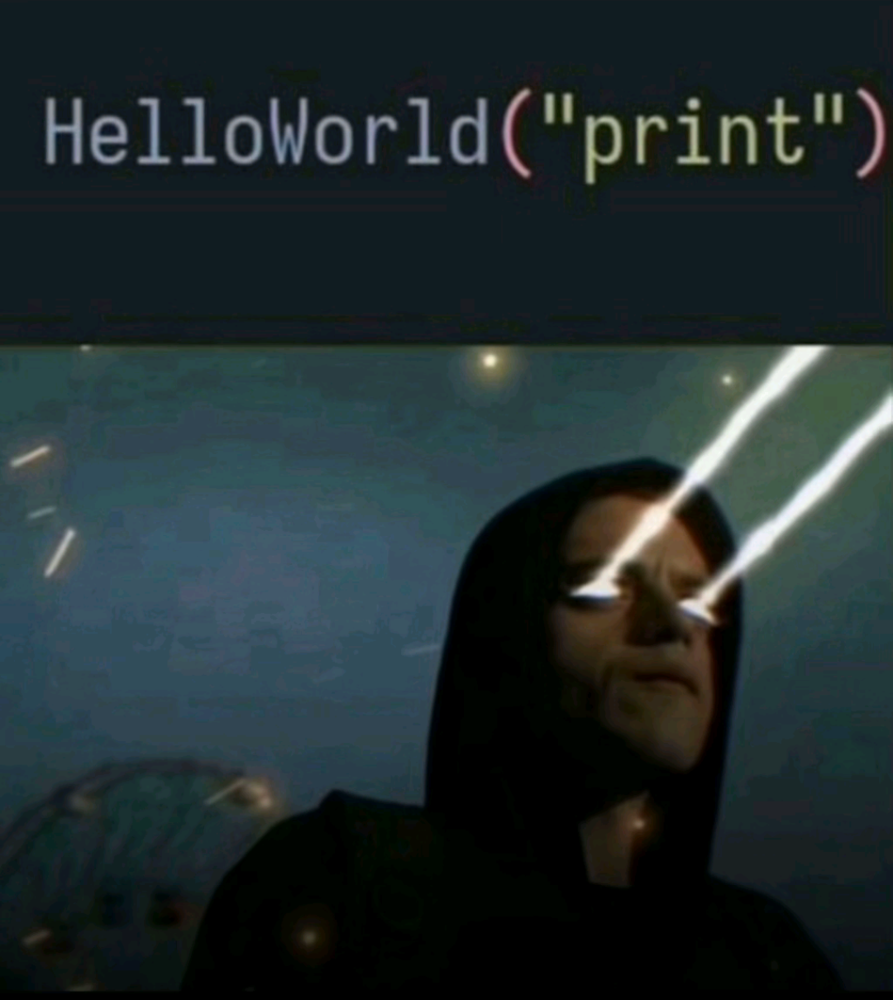

Ми вивчаємо різні мови програмування типу: HTML, CSS, JavaScript, C# і так далі.
Матвій з нас найдосвідченіший, оскільки він знає усі мови яки згадувалось раніше, та інші мови программування, які я зараз назву:
C++, Java, небагато Assembler. Вчимо ми всі ці мови на такому прекрасному сайті як W3Schools (не реклама)
НУ по перше ви бачили скільки айтішніки заробляють? А по друге кожен з нас спробував айті і нам сподобалось бути хакерами крутими ващє☠️💀

Айті-спеціалісти розробляють програмне забезпечення, сайти та мобільні додатки, забезпечують їхню стабільну роботу й постійне вдосконалення. Вони тестують продукти, знаходять і виправляють помилки, оптимізують швидкість і зручність використання. Також айтішники займаються захистом даних, налаштуванням серверів і мереж, а ще допомагають користувачам вирішувати технічні проблеми.
У сфері IT є багато напрямів:
рограмісти (створюють код і функціонал)
веб-розробники (роблять сайти)
мобільні розробники (створюють додатки для телефонів)
тестувальники (перевіряють якість продуктів)
дизайнери (розробляють зручний і красивий інтерфейс)
системні адміністратори (підтримують роботу серверів і мереж)
фахівці з кібербезпеки (захищають інформацію)
Завдяки їхній роботі функціонують сайти, онлайн-магазини, ігри, банківські сервіси, соціальні мережі та інші цифрові продукти